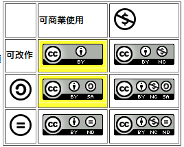

創用CC的常見誤解：誰該使用「非商業」(non-commercial) 條款？

◎ 本篇文章傳達筆者意見，不代表自由軟體鑄造場電子報立場，回覆意見請見部落格原文網址：https://ckhung0.blogspot.com/2011/05/cc-non-commercial.html。
發現很多朋友對創用CC的 Non-Commercial (NC) 條款有誤解。NC 的效果，是「保障自己將作品商業化的壟斷權」，而不是「讓更多人可以免費閱聽我的作品」。如果您自己本身從來就不打算將作品商業化，那麼建議不要在作品上加上 NC 條款。
如果作者本身從來就不打算將自己的作品拿去賣錢，那麼 NC 條款所達到的效果就是：這份作品永遠都只能存活在金錢經濟體制之外。（以網路時代資訊汰舊換新的標準來看，目前 copyright 所保護的時限，就等於是永遠。）比方您畫了一張圖，用 cc-by-nc 授權，被我拿來當做部落格文章的插圖。有一天我突然想將自己部落格文章結集成冊出書，這時就必須捨棄這張圖，另外換一張寬鬆授權的圖。
有人認為：「NC 條款的用意，是希望任何人都可以免費欣賞我的作品。我樂意免費分享；不希望轉了幾手之後，別人反而必須付費才能看到。」不幸地是，加了 NC 之後，實際的效果卻只是讓作品更不容易轉手（如上例，作品失去了進入商業市場的機會）「可以免費欣賞作品」的人口並未因此增加，但「願意付費欣賞作品」的人卻失去了機會。
NC 條款最大的意義是保障作者的壟斷權：當作者有一天決定將他自己的作品拿去賣錢的時候，可以確保沒有其他人會賣相同的商品與之競爭。想靠作品賺錢的人，才應該考慮採用 NC 條款。NC 是拿來掃除賺錢競爭對手用的，而不是拿來表明自己不屑銅臭用的。
聽說很多中小學老師對自己的作品施以 NC 條款，是因為配合中小學「不鼓勵老師從事商業行為」的文化。但如果我是縣市教育局長，我希望中小學老師不要從事商業行為，那麼我更會要求大家放棄自己的商業壟斷權，也就是不要加上 NC 條款。
換個方式說：如果數學定理也受到智慧財產權保護（就像「尺規文明」寓言裡面的世界一樣），如果畢達哥拉斯當初發明畢氏定理的時候加上 NC 條款，那麼將會有更多人受惠，或是更少人受惠呢？
再換個方式說：如果您認同 BSD 或 X11 類型的自由軟體授權，那麼您應該會傾向採用 CC-BY 釋放您的作品；如果您認同 GPL 類型的自由軟體授權，那麼您應該會傾向採用 CC-BY-SA 釋放您的作品。自由軟體並不反對商業行為；事實上，軟體授權若含有反商業化條款的，就不能算是自由授權，因為這樣就不夠自由。文字創作領域也有很好的例子：就像自由軟體（而不像共享軟體）一樣，維基百科從一開始就預期它的內容將來有可能被拿去商業化。所以貢獻到維基百科的圖文，必須以 CC-BY 或 CC-BY-SA 相容的方式授權。如果您認同維基百科，請考慮模仿其授權方式釋放您的作品。
另一方面，如果您的圖文影音作品加了 NC 條款，那就表示您對軟體的價值觀可能會比較接近共享軟體 (shareware) 而不是自由軟體。當然，兩種價值觀都符合網路世界的現實（「禁止拷貝是沒有用的」）。從個人的角度來看，要不要採用 NC 條款，是個人價值觀的選擇，並沒有誰對誰錯。不過，從社會整體的角度來看，「放棄商業壟斷權」的自由軟體與維基百科，顯然比「禁止他人商業使用」的共享軟體要來的成功很多。如果當初維基百科的授權加上 NC 條款，或是 Linux 核心的授權或 Firefox 的授權加上「禁止商業使用」條款，那麼恐怕今天我們就沒有機會看到維基百科挑戰大英百科、Android 手機挑戰 iPhone、Firefox 挑戰 IE。
事實上有人更進一步認為，創用 CC 應該只留下三種授權：CC-BY, CC-BY-SA, CC-BY-NC；其他授權的實用性不高，只會增加困擾。詳見：Confusion and Complexity: High time to prune the Creative Commons licenses?
也許 NC 條款應該改名為「保留商業壟斷權」條款，大家在使用時，更不容易會錯意、更能夠正確反映自己的意願及對世界未來的願景。